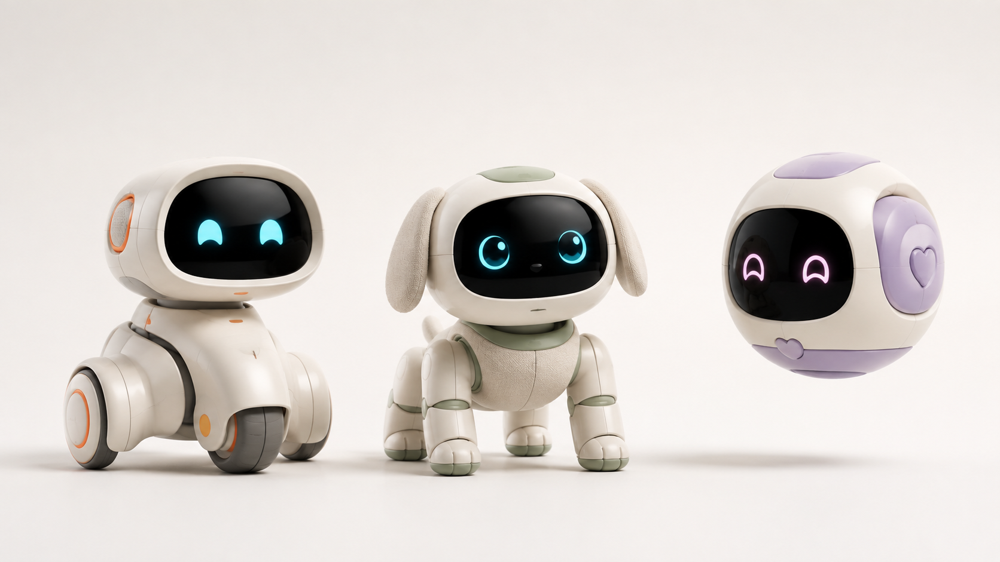

核心技术壁垒
世界模型负责理解与预测，WAM 动作智能体负责策略、规划、技能组合与强化学习。
从“会说”走向“会理解、会行动”DATA-DRIVEN EMBODIED INTELLIGENCE
以世界模型与 WAM 动作智能体为核心，连接多模态理解、边缘执行与数据闭环， 构建可跨形态扩展的桌宠机器人平台。

同一智能底座
适配不同桌宠形态
INVESTMENT THESIS
世界模型负责理解与预测，WAM 动作智能体负责策略、规划、技能组合与强化学习。
从“会说”走向“会理解、会行动”云端模型、平台服务、边缘计算与硬件感知分层解耦，一套底座适配多种机器人形态。
从单一产品走向产品家族真实交互产生数据，经采集、标注、训练、验证与策略优化，反哺模型与产品体验。
产品使用越多，系统越懂用户PRODUCT FAMILY
针对不同空间、交互方式与陪伴需求，形成可持续扩展的桌宠产品家族。
CORE INTELLIGENCE ENGINE
FULL-STACK ARCHITECTURE
从应用交互到硬件感知，从数据支撑到模型训练，各层独立演进、协同闭环。
DATA FLYWHEEL
设备端持续产生真实场景数据，经过治理与训练形成新的模型能力，再通过 OTA 回到终端，构成增长飞轮。
APPLICATION ECOSYSTEM
日常陪伴、情绪识别、个性化成长，让机器人建立连续而有温度的用户关系。
COMPANIONSHIP日程提醒、天气播报、百科问答与信息查询。
DAILY ASSISTANT智能家居控制、环境监测与可选的家庭安防联动。
SMART HOME儿童教育、故事陪伴、游戏互动与知识问答。
EDUTAINMENT通过 API、SDK、技能工具包与内容平台，连接开发者和产业合作伙伴，共建新的机器人应用。
DEVELOPER ECOSYSTEMPLATFORM PATH
BUILD THE FUTURE TOGETHER
我们面向战略投资、产业链合作、模型能力与内容生态伙伴开放沟通。
预约项目沟通 上线前请将 contact@yourcompany.com 替换为正式商务邮箱